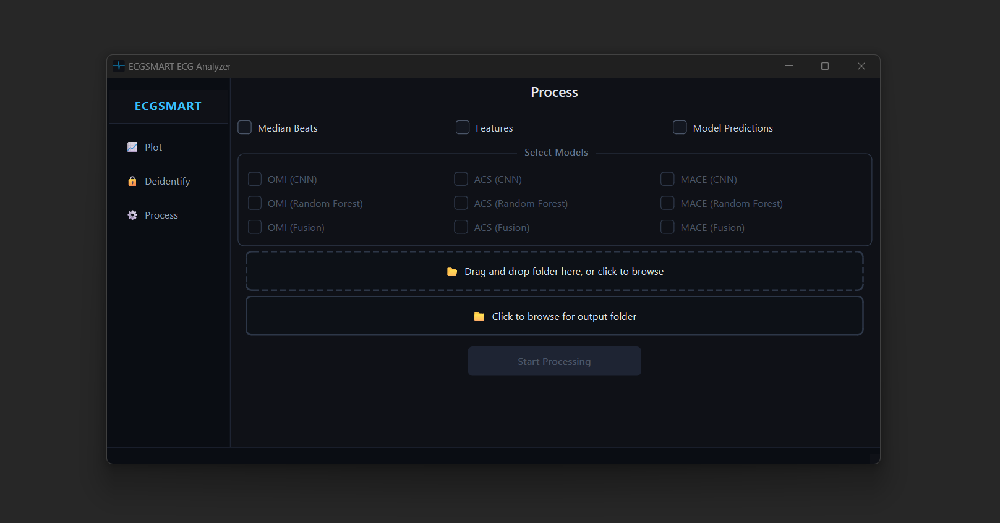
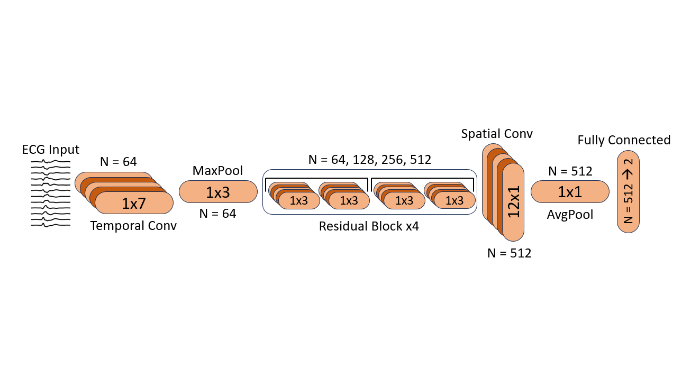

This desktop app takes ECG xml files and 1) plots the ECGs on graph paper, 2) deidentifies the xml files, 3) generates median beats, features, and model predictions.

ECGSMARTNET is a modification of ResNet-18 designed for multi-channel biosignal data. It first learns within-channel features followed by cross-channel features.